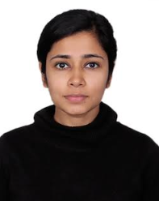

Kay is a Finance Specialist and currently works for Project Connect, a United Nations project. She is part of a global coverage team with experience in LatAm, Asia and across the African continent. Focuses on the deployment of available resources. She is currently pursuing her Masters in Public Administration at Harvard Kennedy School. She is keen to explore data analysis for policy making.
Aditi is an engineer and a lawyer with expertise in technology policy. She is currently an Ash Center Ford Foundation Fellow at the Harvard Kennedy School where she is pursuing a Master’s in Public Administration degree. Her experience ranges from advising governments, corporations and inter-governmental organizations about the complex legal-regulatory and policy issues that impact technology markets in India to advocating for digital rights for Indian citizens.
Raka is currently pursuing her Masters in Public Administration in International Development at Harvard Kennedy School. She is passionate about growth disagnostics in developing countries and hope to work at the intersection of development and technology to see how data can be used for good at scale.
Home Page